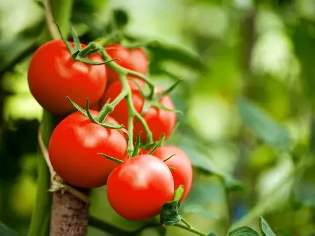

Paradižnik potrebuje sončen, topel prostor in več zemlje, kot je na voljo v majhnem okrasnem lončku. Za balkon izberite kompaktno sorto, za vrt pa sorto uskladite z razpoložljivim prostorom in oporo. Začetnikom je najlažje začeti z zdravo sadiko. Dobro načrtovanje vključuje tudi dostop za zalivanje in varno pritrditev rastline, saj odrasel paradižnik s plodovi postane težak in občutljiv za veter.
Od setve do sajenja na prosto
Za lastne sadike sejemo v svetlem notranjem prostoru proti koncu zime ali spomladi. Zgodnja setev brez dovolj svetlobe pogosto prinese pretegnjene sadike. Globino in temperaturo kalitve preverite na vrečki.
Sadike postopoma privajajte na zunanje razmere. Na prosto jih presadite po nevarnosti pozebe in ob dovolj toplih razmerah; maj ni povsod enako varen. Na gredi pustite približno 50–70 cm, skladno s sorto.
Posoda, opora in zalivanje
Načrtovalnik za eno kompaktno rastlino predvideva najmanj 30 l in 40 cm uporabne globine zemlje. Večja posoda običajno lažje ohranja vlago. Pred namestitvijo preverite nosilnost balkona in stabilnost opore.
Zalivajte pri tleh, čim bolj enakomerno. Visoke sorte privežite, pri odstranjevanju zalistnikov pa sledite načinu rasti sorte; kompaktnih grmičastih sort ne obrezujte avtomatično enako kot visokih.
Zorenje in pobiranje plodov
Plodove pobirajte, ko dosežejo značilno barvo in zrelost sorte. Barva ni pri vseh sortah rdeča. Okvir poletnega pobiranja je odvisen od časa sajenja, vremena in zgodnosti sorte.
Odstranjujte poškodovane plodove in spremljajte liste. Za zračenje pustite prostor med rastlinami, vendar z obrezovanjem ne odstranjujte po nepotrebnem večine listja. Zrele plodove operite pred uporabo in poškodovane hitro porabite.
Informativni vodnik za osrednjo Slovenijo. Termine, velikost posode in razmike prilagodite sorti, vremenu in navodilom dobavitelja. Podatki niso napoved dejanskega datuma pobiranja.
Pogosta vprašanja
Ali je češnjevec primeren za majhen lonec?
Majhni plodovi ne pomenijo nujno majhne rastline. Preverite končno višino in način rasti sorte ter uporabite dovolj veliko posodo.
Moram odstranjevati vse zalistnike?
Ne pri vseh sortah. Visoke sorte in grmičaste oziroma kompaktne sorte imajo različne potrebe, zato preverite navodila za svojo sorto.